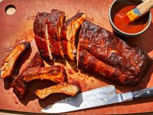

BBQ Ribs

Description
BBQ Ribs is one of Americas famous dishes. The juicy meat paired with a good barbeque sauce is enough to bring anybody together. ITs a long tradition to grill out on the back deck while cooking some fine ribs for supper with the family.
Ingridients
- 4 pounds pork spareribs
- 1 cup brown sugar
- 1/2 cup chile sauce
- 1/4 cup ketchup
- 1/4 cup soy sauce
- 1/4 cup worcestershire sauce
- 1/4 cup rum
- 2 cloves garlic,crushed
- 1 teaspoon dry mustard
- 1 dash ground black pepper
- cooking spray
Steps
- Preheat the oven to 350 degrees F
- Cut spareribs into serving size portions;wrap in double thicness of foil
- Bake in the preheated oven for 1 1.2 hours. Unwrap and drain drippings. Place ribs in a large roasting pan.
- Mix brown sugar, chile sauce, ketchup, soy sauce, worcestershire sauce, rum, garlic, mustard, and pepper together in a bowl. Coat ribs with sauce and marinate at room temperatuure for 1 hour or refrigerate for 8 hours to overnight.
- preheat the grill to medium heat. position the grate above heat source; grease the grate with cooking spray.
- Cook ribs on the preheated grill for 30 minutes, basting with marinade.
- All Done!